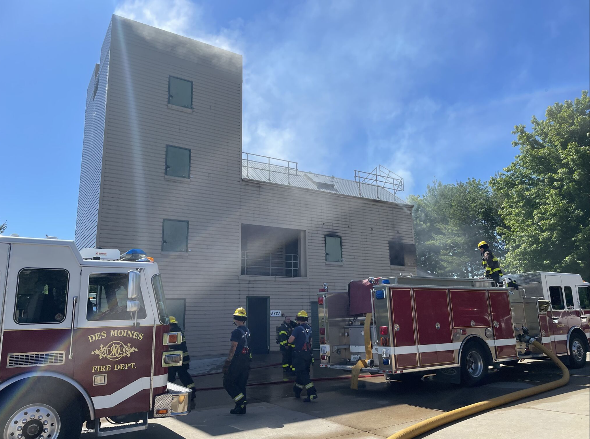
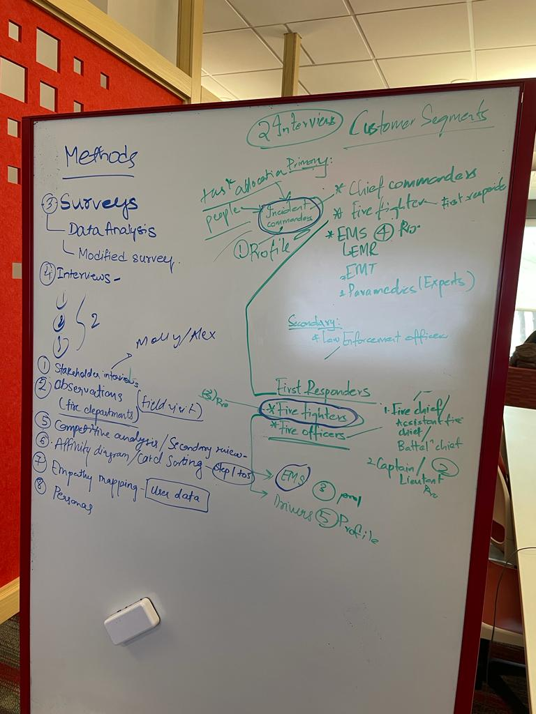
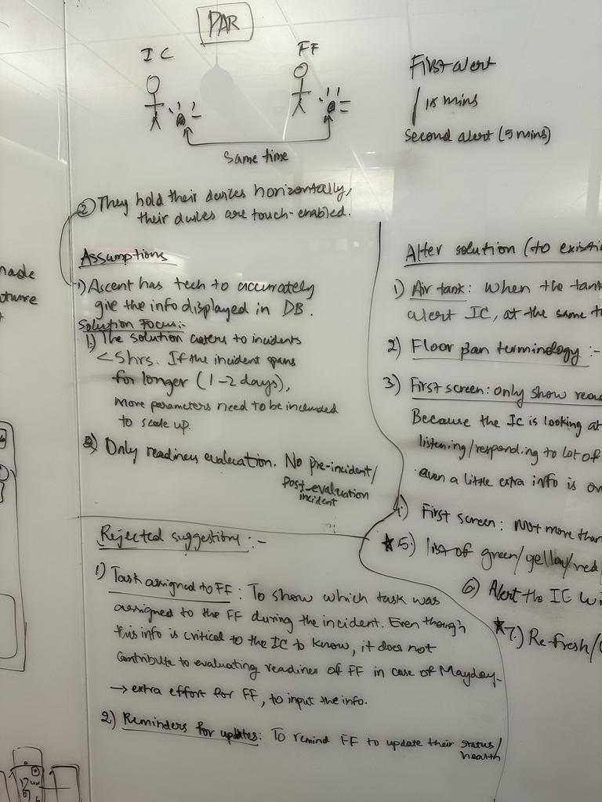
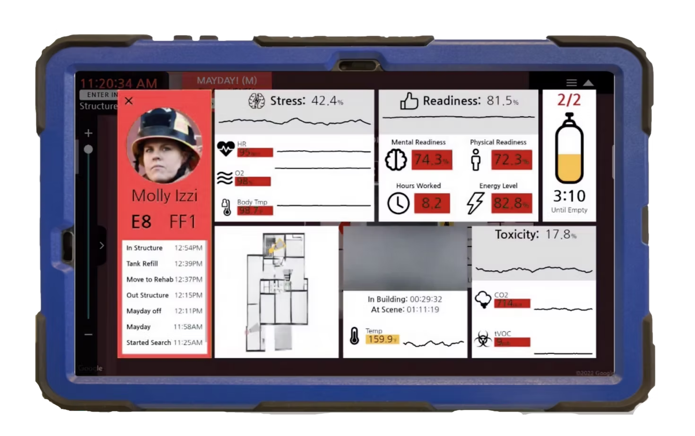
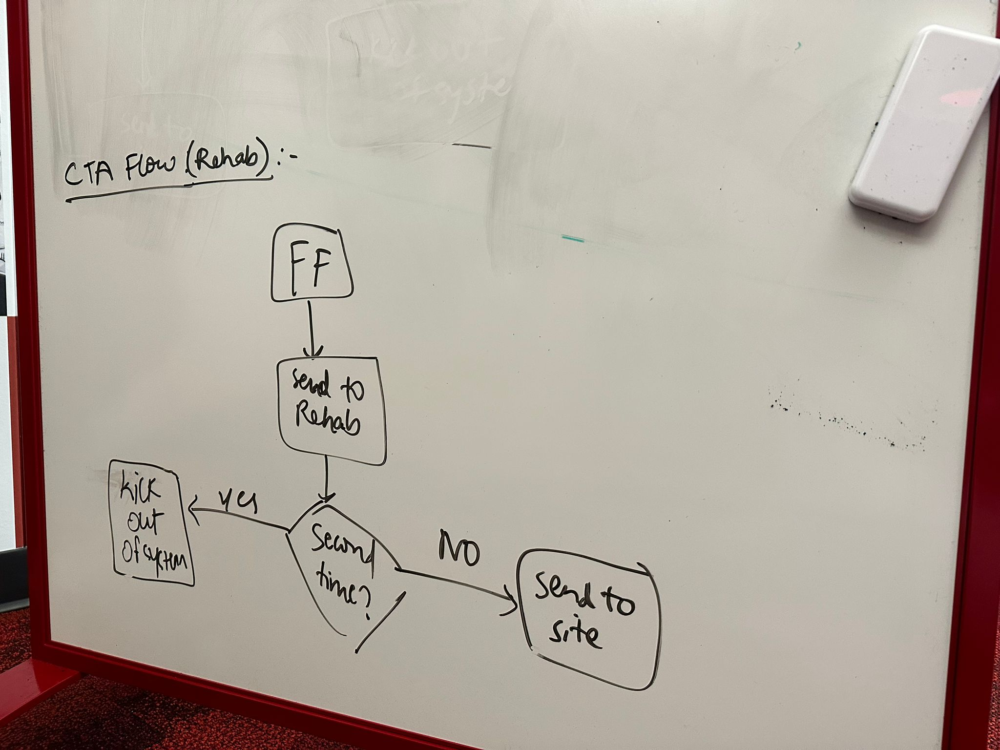
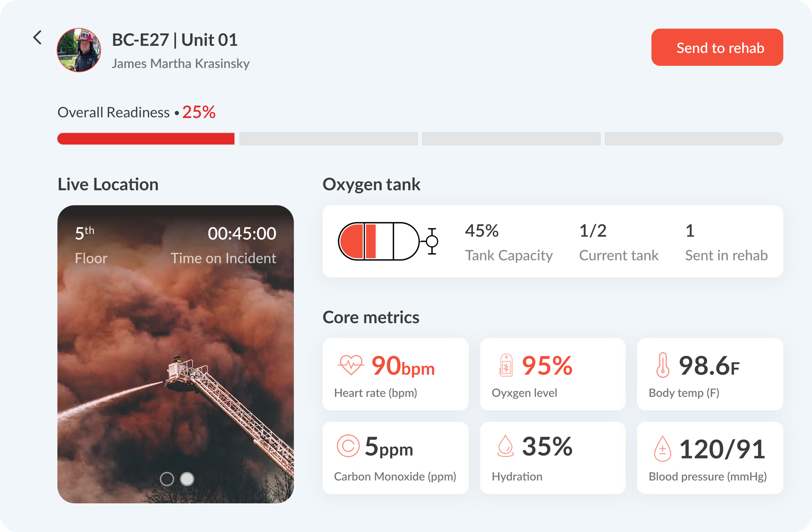
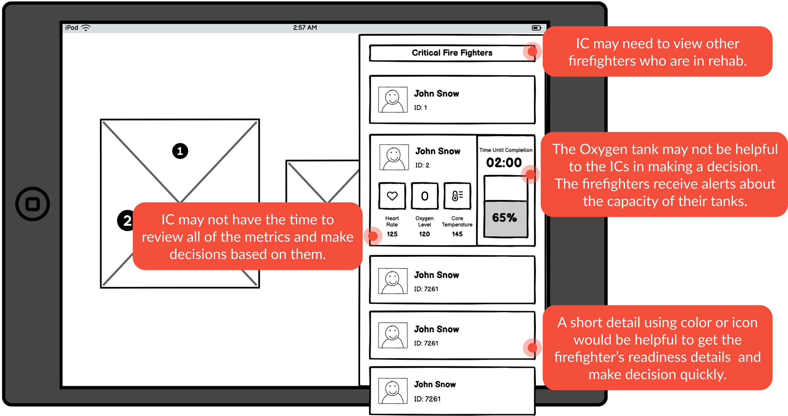

Helping incident commanders recognize risk and move firefighters to rehab.
Within a cross-functional team of five, I designed and shipped a readiness-and-rehab workflow inside Ascent's incident command product, turning complex telemetry into a focused view of who needs attention and what to do next.
Shipped overview: locate risk, review readiness, and act without leaving the incident view.
THE PROBLEM
Ascent could collect and display incident data, but commanders still had to interpret too much information before deciding who needed help.
MY CONTRIBUTION
I led research synthesis, workflow definition, interaction design, prototype testing, and refinement of the readiness-and-rehab flow within a cross-functional team of five.
THE RESULT
A shipped workflow that leads with actionable readiness, keeps supporting telemetry available, and makes rehab explicit.
VALIDATION SIGNAL
Pre-launch evaluation recorded an 82 SUS and 4.2/5 prototype satisfaction. These are directional validation signals, not post-launch impact.
01CONTEXT
DESIGNING INSIDE AN ACTIVE COMMAND SYSTEM
The feature had to earn attention in an environment already full of it.
During active incidents, incident commanders monitor crews, radio traffic, changing hazards, and evacuation procedures simultaneously. Delayed decisions around firefighter exhaustion and rehabilitation can increase risk for crews already operating under extreme physical strain. The challenge was not presenting more data; it was helping commanders recognize who needed attention quickly enough to act.
The existing command interface already combined maps, assignments, and incident controls.

The real operating context is physical, social, and time-sensitive.
PROTOTYPE-TESTING FEEDBACK
“I won't have time to review every metric.”
That constraint reframed the problem from displaying health data to supporting a rapid triage decision.
The core design question became: how might the system help an incident commander recognize risk and make a rehab decision without asking them to analyze a dashboard?
02SYNTHESIS
FROM RESEARCH TO PRODUCT PRINCIPLES
We first had to decide what information deserved to interrupt the incident.
I synthesized stakeholder conversations, domain research, field context, and prototype feedback to rank what deserved attention under pressure: what should interrupt, what should stay one step deeper, and what should become an action.
OBSERVATION
Commanders already split attention across people, radio, map, and incident state.
Insight: another alert would compete for attention.Principle: interrupt only when action is required.OBSERVATION
Commanders checked location before interpreting health signals.
Insight: risk only mattered when tied to place.Principle: context comes before diagnosis.OBSERVATION
Rehab status disappeared once the firefighter left the main incident flow.
Insight: actions needed continuity across screens.Principle: keep rehab visible and actionable.
✦
RESEARCH SYNTHESISTurning observations into product principles
4 inputs → 3 working principles
INPUTS
Stakeholder interviews · field observation · secondary research · prototype tests
↓
Lead with readiness, not telemetry.Show the operational implication before the underlying signals.
Design the overview for triage.Help commanders locate and review the people who need attention first.
Make rehab visible and actionable.Keep supporting context one step away and the next action explicit.
I treated these principles as buildable hypotheses: strong enough to guide the launch scope, but still needing field validation with medical and fire-safety experts.

This map clarified that the command view had to serve the incident commander first, while still accounting for firefighter, EMS, and rehab handoffs.

This board turned assumptions into rules: show only what supports triage, defer the rest, and make rejected directions explicit.
03DECISION ONE
DESIGN THE OVERVIEW FOR TRIAGE
Replace a wall of telemetry with an answer to “who needs attention?”
The existing system already carried incident context, firefighter identity, biometrics, map information, and event history. Our redesign did not need to add more data; it needed to turn that data into a triage workflow commanders could act on quickly.

The system had the signals. The redesign clarified the decision: who needs attention, where are they, and what should happen next?
REJECTED DIRECTIONMake every available biometric visible on the overview
This treated all signals as equally urgent and required commanders to interpret the data while coordinating an active incident.
REJECTED DIRECTIONUse event history as the primary explanation
History is valuable for investigation, but it is not the fastest path to deciding who needs support now.
PRODUCT DECISIONLead with readiness, location, and visible actions
The overview supports triage; underlying telemetry and history remain available when deeper context is needed.
04DECISION TWO
MAKE REHAB A WORKFLOW, NOT A LABEL
Connect recognition, review, and action without hiding the next step.
Testing showed that commanders needed to see who was already in rehab and that hidden calls to action would be ineffective. The redesigned workflow introduced a dedicated rehab state, persistent actions, and a details view that explains the readiness summary.

This flow changed rehab from a status label into a decision path: send to rehab, keep visible, or return to the incident.

Details explain the readiness state while keeping “Send to rehab” visible. Click to inspect.
1Recognize
A critical readiness state surfaces.
→2Review
Location and key signals provide context.
→3Act
The commander sends the firefighter to rehab.
HIGH-STAKES ALTERNATIVE
Hide the rehab action until after a deeper review.
WHY WE REJECTED IT
Testing indicated that hidden calls to action would be ineffective under pressure. The shipped direction keeps the action persistent while preserving the evidence needed to make it responsibly.
05ALIGNMENT
TURN RESEARCH INTO BUILDABLE RULES
I made the product logic explicit so the team could align on what to surface, defer, and make actionable.
Within the cross-functional team of five, I translated the research into product principles, decision flows, assumptions, rejected directions, and interaction states. This gave the team a shared basis for discussing what belonged in the overview, what remained in details, and how the rehab workflow should behave.
SURFACECritical readiness, location, and action
The minimum information needed to recognize and respond.
DEFERRaw telemetry and event history
Supporting evidence stays available without dominating triage.
MAKE EXPLICITAssumptions, thresholds, and edge cases
Open questions remain visible for expert review and future validation.
06ITERATION
LET FEEDBACK CHANGE THE PRODUCT
The strongest changes came from testing what commanders would ignore.

Testing feedback annotated directly on an early concept.
FEEDBACK“I won't have time to review every metric.”→ Lead with overall readiness and move supporting metrics to details.FEEDBACKCommanders may need to review firefighters already in rehab.→ Add a dedicated “In Rehab” view.FEEDBACKHidden calls to action may not work under pressure.→ Keep “Send to rehab” visible beside the decision context.FEEDBACKColor and short summaries help quick interpretation.→ Use status, hierarchy, and language together rather than color alone.
07OUTCOME
SHIPPED OUTCOME
Ascent shipped readiness as an operational decision flow, not another dashboard.
Before, commanders interpreted signals across telemetry, location, and incident state before acting. After, they could identify who needed intervention, review the supporting context, and initiate rehab from the same workflow.
The redesign shifted Ascent's existing sensing capability from monitoring data into decision support, strengthening the value of the hardware ecosystem already used in the field.
01Recognize risk
A critical-firefighter overview leads with readiness and location.
02Review context
Supporting metrics explain the readiness state one step deeper.
03Act visibly
A persistent rehab action and dedicated In Rehab state complete the workflow.
PRE-LAUNCH VALIDATION EVIDENCE
4.2/5pre-launch prototype satisfaction82pre-launch system usability score85%original research themes mapped to launch-scope fixes
Directional pre-launch evaluation from the original project materials. These figures are not post-launch impact metrics. The 85% figure is a scope-mapping signal from the preserved research themes, not a measured outcome; the original sample size and study methodology were not preserved.
REFLECTION
Senior product work is often deciding what the interface should refuse to show.
This project strengthened how I translate domain complexity into a focused product direction. The most important design move was not adding telemetry. It was defining the decision the system should support, then making evidence, context, and action arrive in the right order.